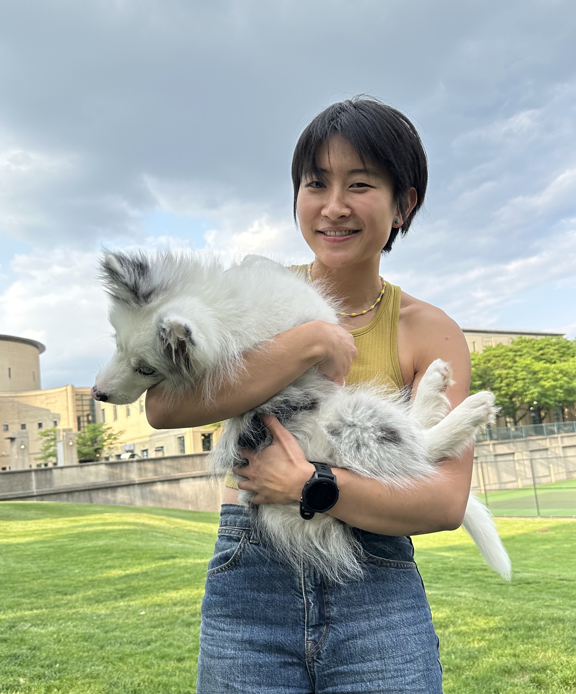

Joint Natural Language and Image Pre-training Builds Better Models of Human Higher Visual Cortex
Nature Machine Intelligence, 2023
Research Scientist · Machine Learning Core, NIH/NIMH

I am a research scientist in the Machine Learning Core at NIH/NIMH, where I collaborate with experimentalists across a wide range of fields to build computational models that explain neural data. My goal is to answer questions such as “what are the objective functions of the brain?” and “how are they implemented?” through building end-to-end task-driven models that allow for behavioral and neuronal interventions.
Prior to NIH, I received my joint PhD in Neural Computation and Machine Learning at Carnegie Mellon University, where I had the privilege of being advised by Mike Tarr and Leila Wehbe. My PhD work focused on modeling visual and semantic processing in the human brain: I collected fMRI data and used models from computer vision and natural language processing to predict and explain brain responses to natural images and movies.
Before CMU, I received a B.A. in Statistics and Cognitive Science from UC Berkeley.
Outside of research, I enjoy bouldering, mountaineering, cooking, and reading.